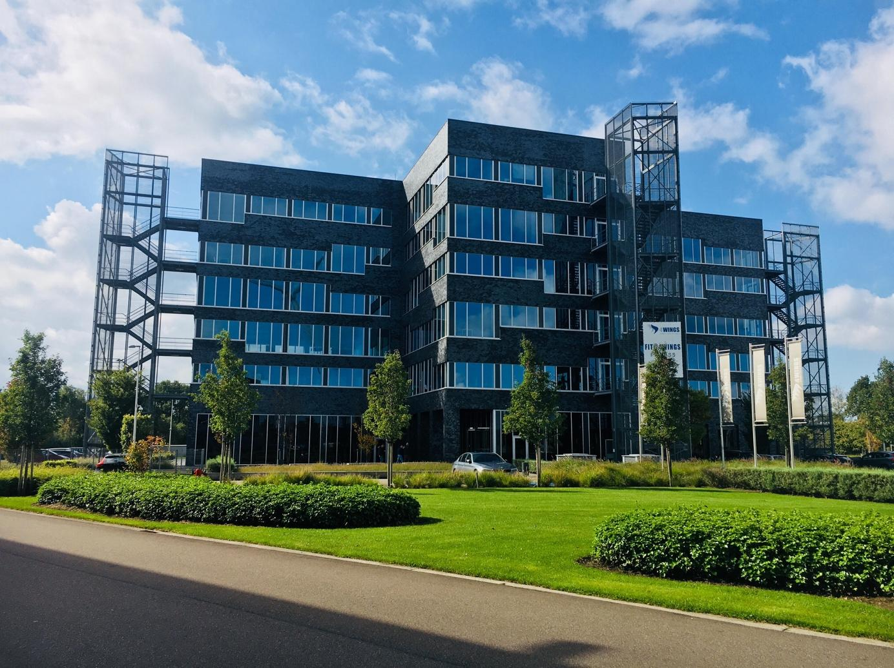
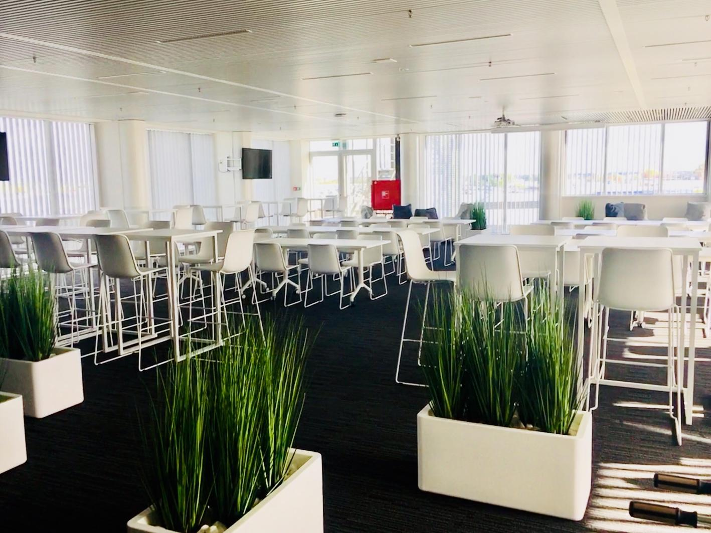
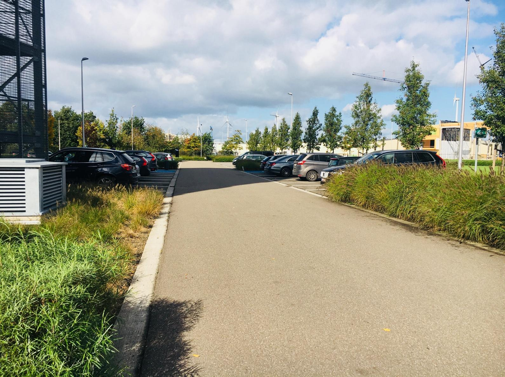
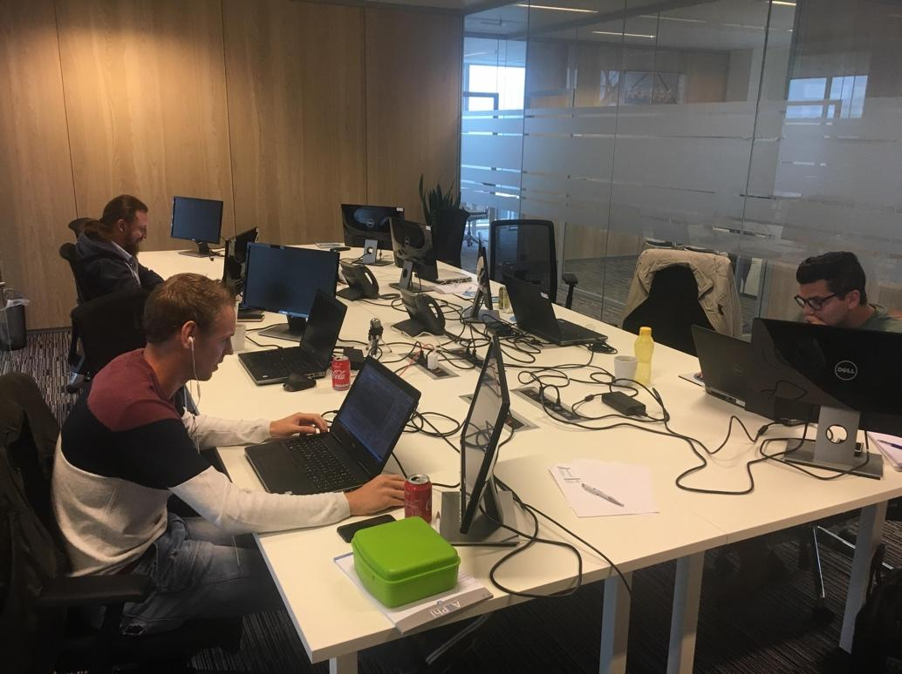
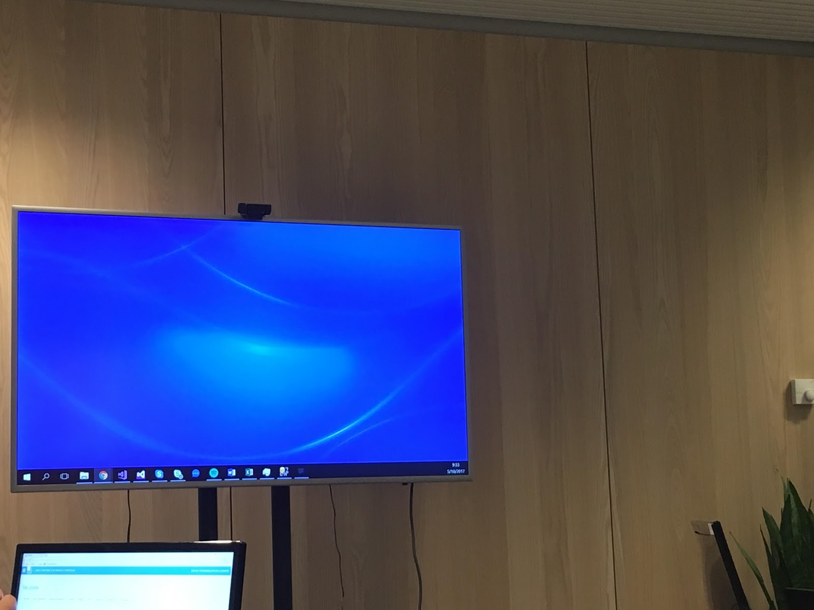
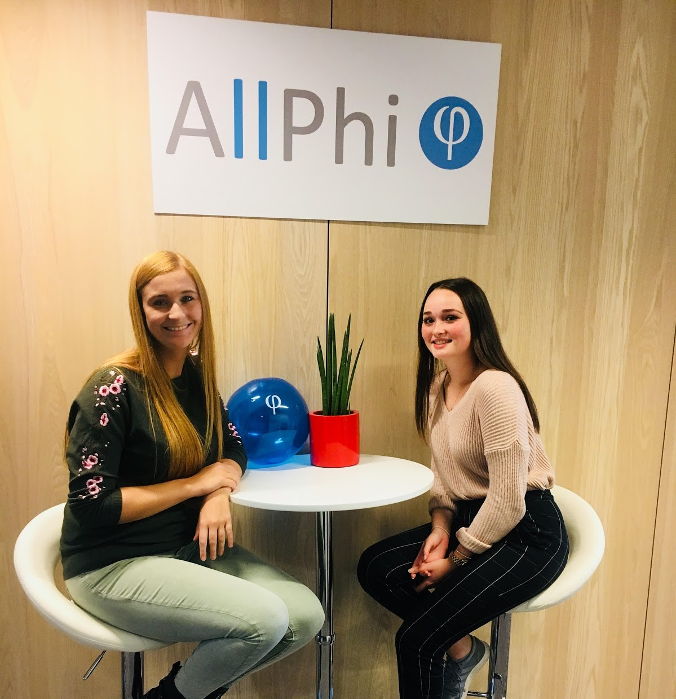

Le bâtiment
Le bâtiment est noir et très moderne. Le nom de ce bâtiment est ‘4 wings’. Il y a plusieurs entreprises dans ce bâtiment. Il y a aussi beaucoup de salles de réunion et une cafétéria. Le bâtiment est situé au Nijverheidsstraat 13 à Westerlo.
L'accueil

L’accueil est très grand et il y a beaucoup de fenêtres. Vous devez passer l’accueil pour aller aux ascenseurs. Si vous voulez entrer dans le bâtiment, vous devez faire une empreinte digitale de votre doigt. Je trouve ça vraiment cool !
La cafétéria
La cafétéria est aussi moderne. Il y a une grande photo d’un bois que je trouve magnifique ! Ici, tout le personnel de l'entreprise se réunisse pour manger ensemble. Le style de la cafétéria est très moderne: les murs et les meubles sont blancs.
Le parking
Le parking est très propre et grand. C’est vraiment clair où vous devez aller. L’accès au bâtiment se fait, comme je l'ai déjà dit, avec l’empreinte digitale de votre doigt. Pour accéder au bureau d'AllPhi , vous devez prendre l’ascenseur et aller au deuxième étage. Je trouve que les ascenseurs et les salles sont très jolis.
lieu de travail
 Toutes les employées travaillent à la même salle à un bureau grand. Il y a un moniteur pour chaque employée et une télé avec un camera pour faires des conférences de vidéos. Vous voyez deux lignes fixes. Le style de cette salle est très simple mais jolie je trouve.
Ma maître
Ma maître de stage s'appelle Dayinka Gilot. Elle est très jeune et gentille! Quand j’ai des questions, elle est toujours là pour m’aider. Elle travaille à AllPhi depuis quelques années déjà. elle aime beaucoup son travail. Ma maître de stage dit qu'elle me trouve très intéressée et je suis vraiment d'accord avec elle.